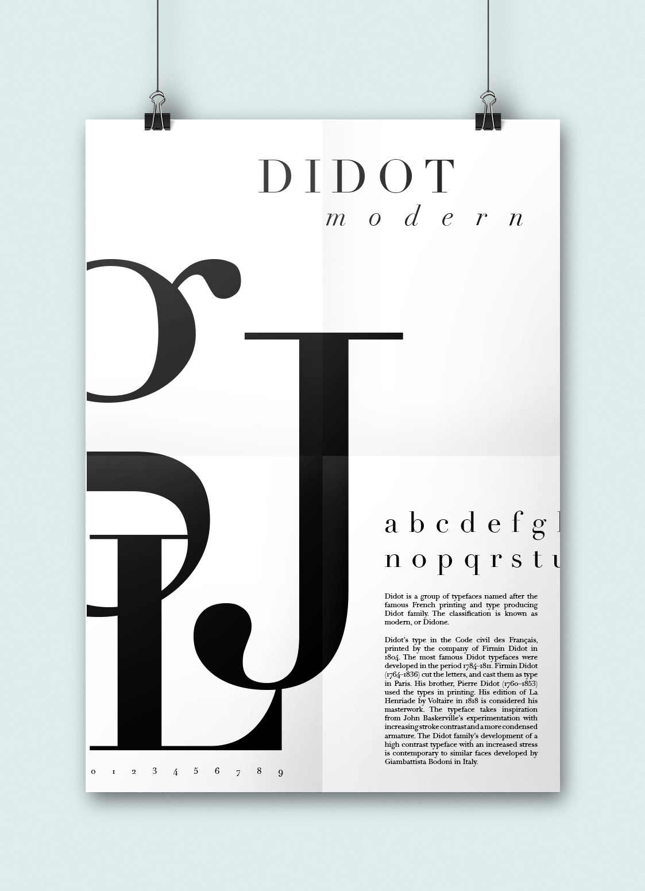
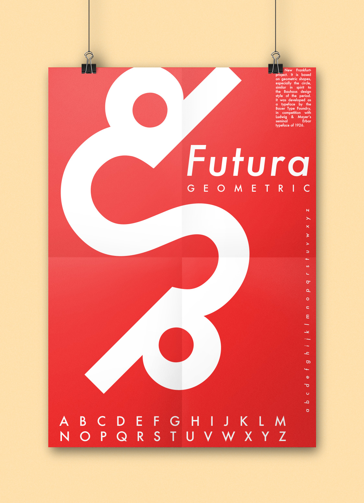
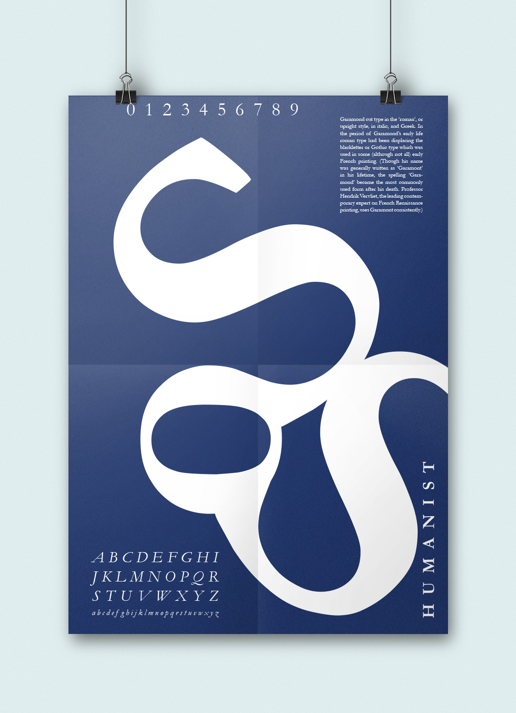

This design challenge prompted me to create various posters using any of the five classifications of type--Old Style, Transitional Serif, Modern Serif, Slab Serif, Geometric Sans Serif--to create beautiful pieces of art, using only letters, the alphabet of each font, and its classification.
This poster highlights the thick stems and thin cross bars of Didot.
This poster creates movement by utilizing the d and S of Futura to create a character swimming. The bold red background is a nod to Barbara Kruger and Supreme.
This poster uses the S and o of Garamond to create a whimsical shape.
This poster uses the forms of the type to create shapes through negative space.